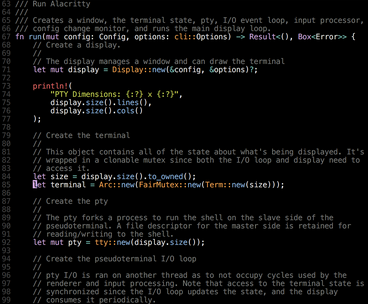
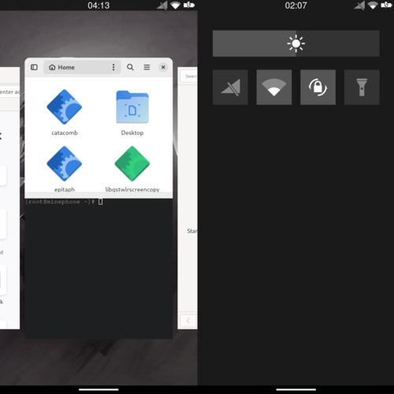

<
>

Alacritty
Alacritty is across-platform, GPU-accelerated terminal emulator written in Rust.
The focus of alacritty are speed and simplicity. Using the GPU to accelerate drawing
makes it one of the fastest terminal emulators availabe.
Alacritty was created by jwilm and I'm currently helping out by contributing to the project.

Catacomb
Catacomb is a mobile compositor and desktop environment aimed at
providing a poweruser-friendly Wayland DE without excessively
relying on terminal scripts to tie everything together.